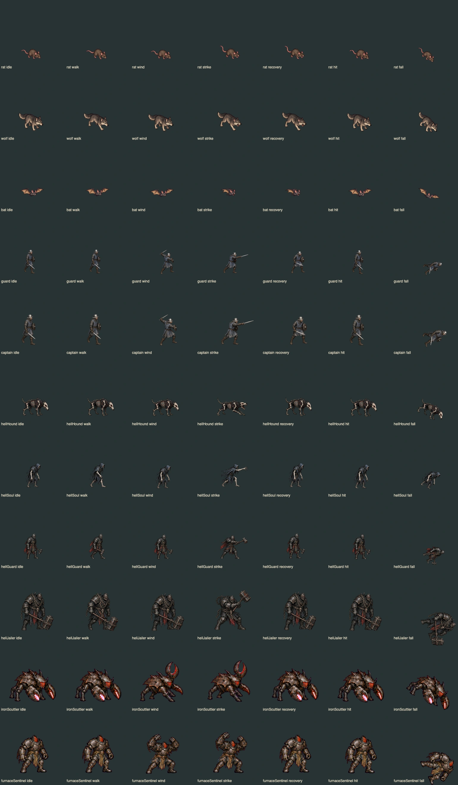

前三章 · 完整覆盖与交互物修复
第一章12图、第二章9图、第三章14图；639处景物和119个交互/可破坏物件。补齐客房、秘密房、地狱环境与物件语义，公告栏移到街旁。全景为固定镜位隔离场景。

 修改前 · 0d4183f本轮结果
修改前 · 0d4183f本轮结果敌人姿势
从左到右：静止、移动、蓄势、出手、收势、受击、倒地。沿用已存在的怪物画稿，增加身体动作与阶段区分。

灰桥水壶：真实鼠标交互截图 · 新图集来源与哈希
物件图集与剧情画面
生活及机关用具 · 用途专用物件 · 地狱环境 · 地狱地表
庄园内室 · 营地医疗床承托保留 · 逐图与交互检查回执